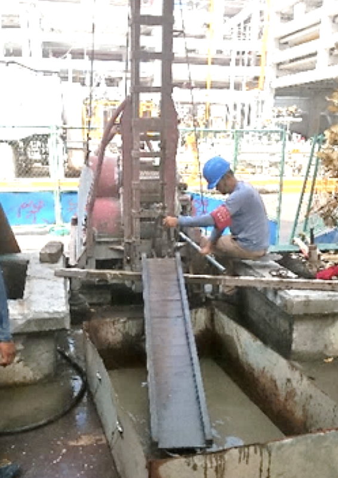

專利說明
本創作係有關於一種地下水抽除曝氣處理系統，其主要設有一可對應置入深層地底的管體，該管體表面分佈有數透孔，再於管體內適當位置處設有阻隔盤，以將管體分隔為曝氣處理區及地下水抽除區，再於曝氣處理區內設有數篩孔板，每一篩孔板上對應穿設抽水管、污泥管及曝氣管，且該抽水管伸入穿透阻隔盤而進入地下水抽除區抽取深層地下水，再輸送經由一噴散器噴灑於管體曝氣處理區；藉此，讓含有揮發性有機污染物的深層地下水經由噴灑於曝氣處理區，同時經曝氣管輸入氣體進行曝氣處理，並於井中裝設篩孔版，使地下水與空氣增加接觸面積，進而移除溶於水中的污染物質，經由處理後之水回流於淺層地層中，以達土壤及地下水復育的工程者。
抽取深層受污染地下水，經由曝氣與特殊元件設備處理，以增加地下水與空氣接觸面積，達到污染物去除處理，處理後地下水迴流至淺層地層中以達自體循環效果，避免衍生二次污染問題。
